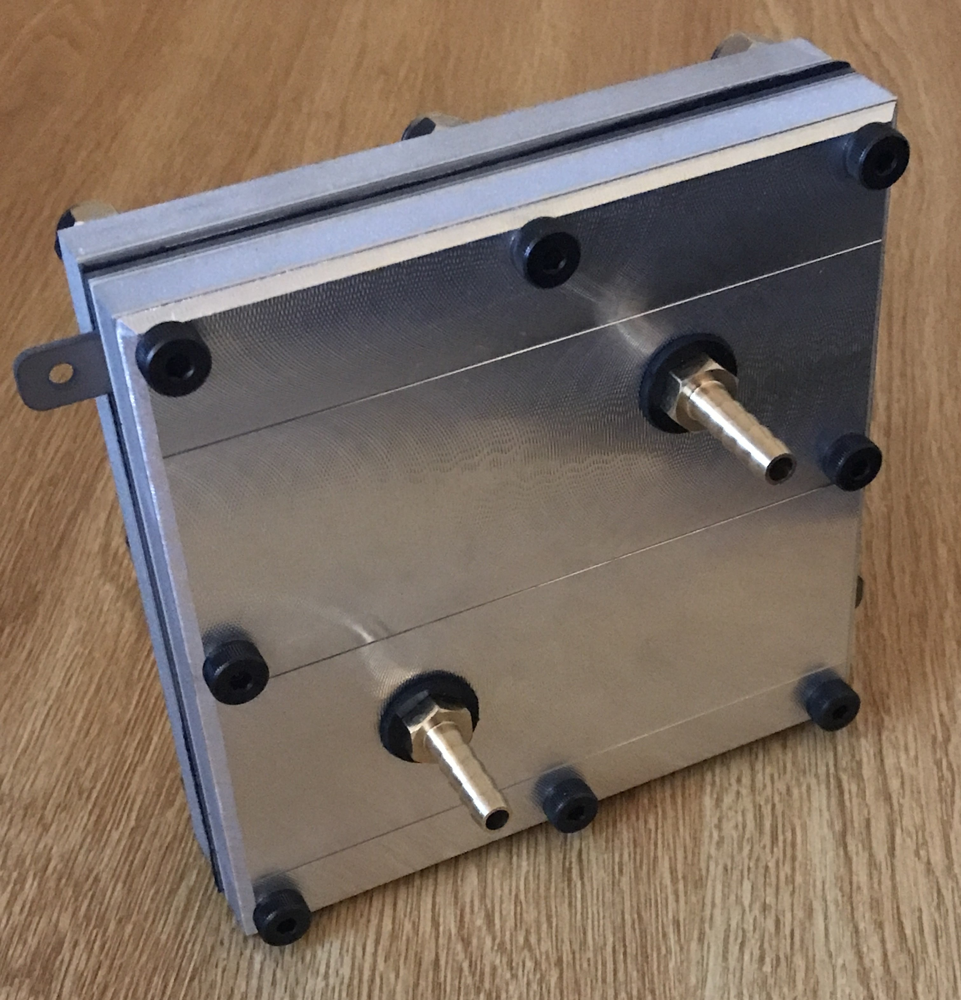

Project Overview
How PEM Electrolysis Works

Water enters through the anode (right side), where current initializes electrolysis process, splitting water into oxygen gas (O₂), protons (H⁺), and electrons. The Nafion membrane (center, orange) only lets protons through while blocking gases. Electrons travel through the external circuit (providing our power measurement). At the cathode (left), protons recombine with electrons to form hydrogen gas (H₂). The optimized flow channels (blue) are what I redesigned to achieve 96% power reduction.
3D CAD Model
Interactive Assembly View
Check the browser console (F12) for details.
Fabricated Hardware




Technical Design
The Core Innovation: Flow Channel Optimization
Materials Selection
- Nafion 117 Membrane: Industry standard PEM, 0.2 S/cm proton conductivity (2x better than benchmark), stable -20°C to 120°C
- Titanium Grade 2 Electrodes: Won't corrode in acidic environment, good electrical conductivity
- Titanium Sintered Mesh: Gas diffusion layer, allows even water/gas distribution
- Garolite (G-10): Electrical insulator, won't ignite under laser (learned this the hard way during prototyping)
- Aluminum 6061-T6: Lightweight compression plates, easy to machine
- Teflon-Coated Bolts: Prevents electrical shorting between plates
Why Not SOEC?
- Last year's team researched Solid Oxide cells which is interesting on paper but impractical for our constraints.
- Requires 700°C+ operating temperature (safety nightmare)
- Not yet commercially viable for small-scale applications
- We wanted to build something, not just write a research paper
Operating Conditions
- Temperature: 50-80°C (safe, manageable)
- Voltage: 5V input (both benchmark and our design)
- Power Draw: Benchmark 13W, ours 0.5-1W
- H₂ Output: Both systems plateau at 2.5×10⁴ mg/L in test chamber
- Efficiency Note: High internal resistance suggests optimization potential: if we eliminate small, hollow gaps in the sandwich, efficiency would improve further
Manufacturing Process
2-Week Fabrication Timeline
Week 1: Prototyping & CAM Validation
Built prototypes from cardboard (internals) and HDPE (externals/fittings) to verify fit and assembly sequence. Used this phase to develop and validate CAM programs for each machining operation. Had shop managers approve all toolpaths before touching the actual materials.
Material-Specific Machining Strategy
Waterjet: Garolite gaskets (laser cutting would ignite fiberglass material)
Wire EDM: All metal gaskets and titanium parts (CNC tool bits wear too fast on titanium)
CNC Mill: Aluminum compression blocks
Rigid Tapping: All threaded holes for bolts and NPT fittings
Manual Assembly: Stacking and compression with proper torque sequence

Week 2: Production Run
Machined all final parts across 5 different machine types. Split team: two machinists (including me) handled fabrication while research subgroup tested the commercial cell and gathered baseline data. Zero safety incidents, zero scrapped parts.
Lessons Learned
Prototyping first was crucial. I caught assembly interferences and tolerance stackup issues before wasting expensive materials. Also learned that some materials have unexpected properties: Garolite starts smoking under laser cutting, producing toxic fiberglass particles. Waterjet was the right call.
Performance Validation
Test Methodology
| Parameter | Benchmark Cell | Our Design | Improvement |
|---|---|---|---|
| Input Voltage | 5V | 5V | — |
| Power Draw | 13W | 0.5-1W | 96% reduction |
| Flow Channel Depth | 0.014" | 0.0625" | 4.5x increase |
| Electrode Surface Area | Baseline | 4x larger | 4x increase |
| Proton Conductivity | 0.1 S/cm | 0.2 S/cm | 2x increase |
| H₂ Plateau Concentration | 2.5×10⁴ mg/L | 2.5×10⁴ mg/L | Equivalent |
Live Hydrogen Production Test
Economics & Scalability
Path to $1/kg Hydrogen
• Nafion 117 membrane: $125 (commercial availability, proven longevity)
• Titanium components: $190 (electrodes + mesh)
• Garolite gaskets: $15
• Aluminum plates: $10
• Hardware/fittings: $15
Total materials: $355 per cell
Problems We Solved
Challenge: Continuous Operation
Initial tests showed inconsistent hydrogen generation, which was not a design flaw, but rather a testing limitation. Water flow was intermittent.
Solution: Identified need for integrated pump system to regulate water flow and maintain consistent operation. This became a key recommendation for future iterations.
Challenge: Gas Separation
H₂ and O₂ need separate collection paths
Solution: Titanium mesh and proper gasket sealing ensure complete separation. Separate outlet fittings for each gas stream. Validated with sensor testing minimal O₂ ppm detected at H₂ outlet.
Challenge: Manufacturing Brittle Materials
Garolite and membrane materials are fragile. Wrong machining method = destroyed parts.
Solution: Material-specific machining strategies. Waterjet for garolite (gentle), wire EDM for metals (precision), careful handling during assembly. Prototyped first with cheap materials to validate process.
Project Resources
Outcomes & Future Work
- Designed and fabricated a working PEM electrolysis cell that produces hydrogen at 96% lower power consumption than benchmark systems
- Demonstrated that optimized flow channel design can dramatically reduce energy requirements without sacrificing output
- Created a manufacturable design using readily available materials and standard machining processes
- Contributed to advancing renewable energy technology toward the DOE's $1/kg cost target
- Integrate water circulation pump for continuous operation
- Optimize compression to eliminate remaining internal resistance (should drop power below 0.5W)
- Scale to multi-cell stack configuration for higher hydrogen output
- Complete solar PV integration with MPPT controller
- Long-term durability testing (membrane lifespan, electrode degradation)
- Economic analysis: actual $/kg of hydrogen produced at scale